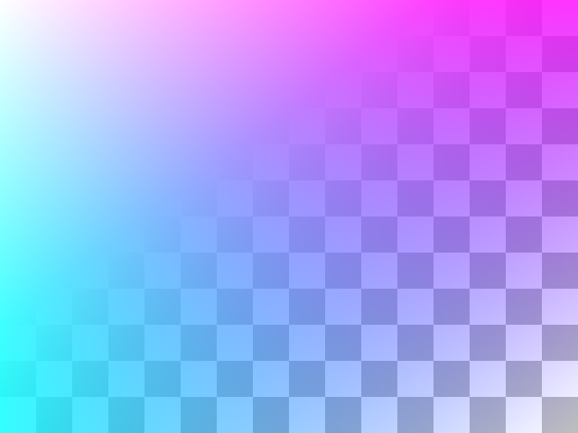

Create PNG image with alpha transparency
The sample shows how to create an RGBA image and store it as a PNG file. It also demonstrates how to set custom PNG compression parameters.
Sources:
create image with alpha channel
sz = [480 640];
img = create_rgba_image(sz);
whos imgwrite to PNG file with alpha data
fname = fullfile(tempdir(), 'alpha.png'); if true cv.imwrite(fname, img, 'PngCompression',9, 'PngStrategy','RLE'); else imwrite(img(:,:,1:3), fname, 'Alpha',img(:,:,4)) end imfinfo(fname)
ans =
struct with fields:
Filename: 'C:\Users\Amro\AppData\Local\Temp\alpha.png'
FileModDate: '05-Oct-2018 00:59:56'
FileSize: 41853
Format: 'png'
FormatVersion: []
Width: 640
Height: 480
BitDepth: 24
ColorType: 'truecolor'
FormatSignature: [137 80 78 71 13 10 26 10]
Colormap: []
Histogram: []
InterlaceType: 'none'
Transparency: 'alpha'
SimpleTransparencyData: []
BackgroundColor: []
RenderingIntent: []
Chromaticities: []
Gamma: []
XResolution: []
YResolution: []
ResolutionUnit: []
XOffset: []
YOffset: []
OffsetUnit: []
SignificantBits: []
ImageModTime: []
Title: []
Author: []
Description: []
Copyright: []
CreationTime: []
Software: []
Disclaimer: []
Warning: []
Source: []
Comment: []
OtherText: []
show image (over checkerboard image as background to better see transparency)
bg = create_checkerboard_image(sz); figure('Menubar','none', 'Color','k', 'Name','RGBA') if ~mexopencv.isOctave() imshow(bg, 'InitialMagnification',100, 'Border','tight') else image(bg), axis image off set(gca, 'Units','normalized', 'Position',[0 0 1 1]) end image('CData',img(:,:,1:3), 'AlphaData',img(:,:,4))
Helper functions
function img = create_rgba_image(sz) %CREATE_RGBA_IMAGE Create image with transparency, with a gradient effect nrows = sz(1); ncols = sz(2); img = zeros(nrows, ncols, 4, 'uint8'); [I,J] = ndgrid(1:nrows, 1:ncols); img(:,:,1) = uint8(255 * (nrows-I+1)/nrows); % red img(:,:,2) = uint8(255 * (ncols-J+1)/ncols); % green img(:,:,3) = uint8(255); % blue img(:,:,4) = uint8(0.8 * sum(img(:,:,[1 2]),3)); % alpha end function img = create_checkerboard_image(sz) %CREATE_CHECKERBOARD_IMAGE Create checkerboard image % n should evenly divide both width and height if true n = 40; %HACK: hardcoded for 640x480 else n = gcd(sz(1), sz(2)); end s = sz / n; assert(isequal(s, fix(s))); img = kron(bsxfun(@xor, mod(1:s(1),2).', mod(1:s(2),2)), ones(n)); img = repmat(max(img, 0.75), [1 1 3]); img = uint8(255 * img); end
Name Size Bytes Class Attributes img 480x640x4 1228800 uint8